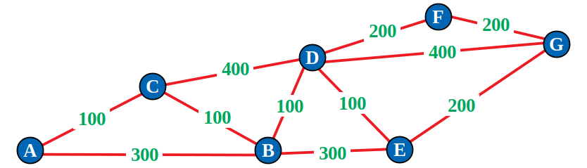

L'objectif est de trouver le trajet le plus court pour aller du sommet A au sommet G dans le graphe suivant.

Sur votre cours (Exercice 6.3 de la feuille 6), compléter le tableau
qui applique l'algorithme de Dijkstra.
Puis donner le trajet le plus court du sommet A au sommet G.
Point 6 :
Lever la main pour que le professeur valide l'exercice et qu'il vérifie
que le cours a été complété correctement.
Puis vous passerez au chapitre suivant :
Chapitre 7.